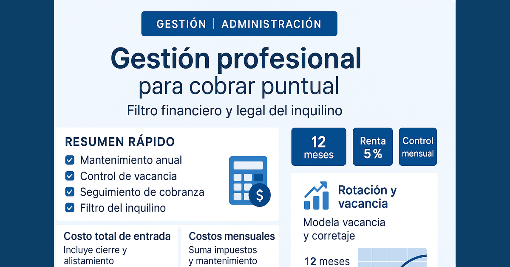

Administrador de departamentos en Perú versus un corredor inmobiliario

Existe la idea de que la administración de departamentos es simple y que basta con “alquilar rápido” para que todo salga bien. La realidad operativa es otra: después de la firma del contrato comienza la etapa más larga y sensible del negocio, donde se define si tu inversión se mantiene ordenada o se vuelve una fuente de estrés.
Por eso, antes de delegar, conviene diferenciar con precisión dos servicios que suelen confundirse: el corretaje (captación y cierre inicial) y la administración (gestión mensual del alquiler). Ambos son valiosos, pero resuelven problemas distintos.
Punto clave: conseguir inquilino es un hito; administrar bien el inmueble durante 12 meses o más es un sistema.
Resumen rápido
- Corredor inmobiliario: foco en comercialización, visitas, filtro inicial y cierre.
- Administrador: foco en operación mensual, cobranza, incidencias y continuidad del contrato.
- Riesgo del propietario: sube cuando no hay procesos de seguimiento ni trazabilidad.
- Decisión correcta: depende de si buscas solo arrendar o sostener una operación estable.
Tabla de contenidos
1. Diferencia esencial entre corredor y administrador
Un corredor inmobiliario suele intervenir de forma intensa al inicio: prepara publicación, gestiona visitas, filtra prospectos y acompaña la firma del contrato. Su misión principal es ocupar el inmueble.
El administrador, en cambio, trabaja durante toda la vida del alquiler: se encarga de cobrar, reportar, resolver incidencias, coordinar mantenimiento, controlar mora y ordenar renovaciones o salidas. Su misión es sostener resultados en el tiempo.
Ambos pueden coexistir, pero no son equivalentes. Si contratas solo corretaje y no cubres la operación posterior, el propietario termina absorbiendo tareas críticas que impactan su tiempo y su caja.
2. Qué cubre un corredor inmobiliario
En una operación típica de alquiler, el corredor aporta sobre todo en velocidad comercial. Estas son sus funciones más comunes:
- Valorización referencial del inmueble para salida a mercado.
- Publicación en portales y coordinación de visitas.
- Filtro básico de interesados y recopilación de documentos.
- Soporte en negociación y cierre inicial del contrato.
El límite está en la postventa: una vez ocupado el departamento, muchos procesos quedan fuera de su alcance (cobranza recurrente, gestión diaria de incidencias, control de compromisos del inquilino).
Si tu objetivo es solo “cerrar alquiler”, esta capa puede bastar. Si tu objetivo es rentabilidad neta estable, necesitas capa operativa continua.
3. Qué cubre un administrador de departamentos
Un administrador profesional estructura la operación mensual para que el inmueble no dependa de llamadas sueltas ni decisiones improvisadas. Su alcance suele incluir:
- Cobranza y recaudación: seguimiento de vencimientos, cálculo de mora y conciliación de pagos.
- Comunicación con inquilino: canal único para incidencias, coordinación y documentación.
- Mantenimiento: diagnóstico, cotizaciones, ejecución y cierre con evidencia.
- Reportería al propietario: estado de cobros, incidencias abiertas/cerradas y costos operativos.
- Cierre de contrato: renovación, inspección de salida e inicio de reposición comercial.
Cuando estos procesos están digitalizados, el propietario gana trazabilidad y reduce fricción. El beneficio no es solo “comodidad”: es control.
4. Comparativo operativo por etapas
Ver la operación por fases ayuda a elegir mejor el servicio:
- Etapa comercial (vacancia): mayor peso del corretaje.
- Etapa de estabilidad (contrato activo): mayor peso de administración.
- Etapa de incidencia (mora, daños, reclamos): gestión administrativa especializada.
- Etapa de renovación/salida: coordinación legal-operativa y reingreso a mercado.
El error común es contratar solo la primera etapa y subestimar las tres siguientes. Ahí se concentra el riesgo operativo que afecta renta y continuidad.
Si quieres profundizar en control financiero de la operación, revisa también gastos de invertir para alquilar y gastos post-compra en Lima.
5. KPIs para controlar la gestión mes a mes
Sin indicadores, la administración se evalúa por percepciones. Con indicadores, se evalúa por resultados. Para propietarios, estos KPIs son mínimos:
- Vacancia: días sin inquilino entre contratos.
- Puntualidad de pago: porcentaje de cobros en fecha objetivo.
- Tiempo de resolución: horas o días por incidencia relevante.
- Costo operativo mensual: mantenimiento + incidencias + otros gastos asociados.
- Tasa de renovación: contratos que continúan versus total de vencimientos.
Con estos datos, puedes detectar rápido dónde se está perdiendo eficiencia y ajustar antes de que el problema impacte el resultado anual.
6. Errores frecuentes de propietarios
Error 1: confundir cierre con gestión. Alquilar una vez no garantiza orden operativo durante todo el contrato.
Error 2: no formalizar reglas de servicio. Si no hay niveles de atención, tiempos y responsables, cada caso se resuelve de forma reactiva.
Error 3: comunicación directa sin canal. Cuando propietario e inquilino se coordinan fuera del sistema, se pierde trazabilidad y se desvirtúa la administración.
Error 4: medir solo ingreso bruto. Sin control de costos y mora, la rentabilidad aparente puede estar sobreestimada.
Plan de acción recomendado
Si ya tienes o estás por poner en alquiler un departamento, usa esta secuencia:
- Define objetivo: velocidad de colocación, estabilidad de caja o ambas.
- Contrata alcance explícito: comercial, operativo y financiero.
- Establece KPIs y frecuencia de reportes desde el mes 1.
- Documenta protocolos para mora, incidencias y cierre de contrato.
- Revisa trimestralmente desempeño y corrige desvíos.
Esta estructura evita que la inversión dependa del “seguimiento manual” del propietario y permite escalar con menor carga operativa.
Preguntas frecuentes
¿Un corredor inmobiliario reemplaza al administrador del departamento?
No. El corredor se enfoca principalmente en conseguir inquilino y cerrar la operación inicial; la administración cubre la gestión mensual posterior.
¿Qué tareas debe asumir un administrador profesional?
Cobranza, seguimiento de pagos, control de mora, coordinación de mantenimiento, gestión de incidencias, reportes al propietario y soporte en renovaciones o salida de inquilino.
¿Cómo mido si la administración está funcionando bien?
Con KPIs: vacancia, puntualidad de pago, tiempo de resolución de incidencias, costo de mantenimiento y tasa de renovación.
Conclusión
La diferencia entre un alquiler estable y un alquiler problemático suele estar en el sistema de gestión, no en una sola acción comercial. El corredor aporta velocidad en la entrada; el administrador aporta continuidad y control durante toda la operación.
Para propietarios que buscan resultados sostenibles en Lima, la pregunta no es “qué servicio es mejor en abstracto”, sino qué combinación te permite proteger rentabilidad, tiempo y tranquilidad en cada etapa del alquiler.